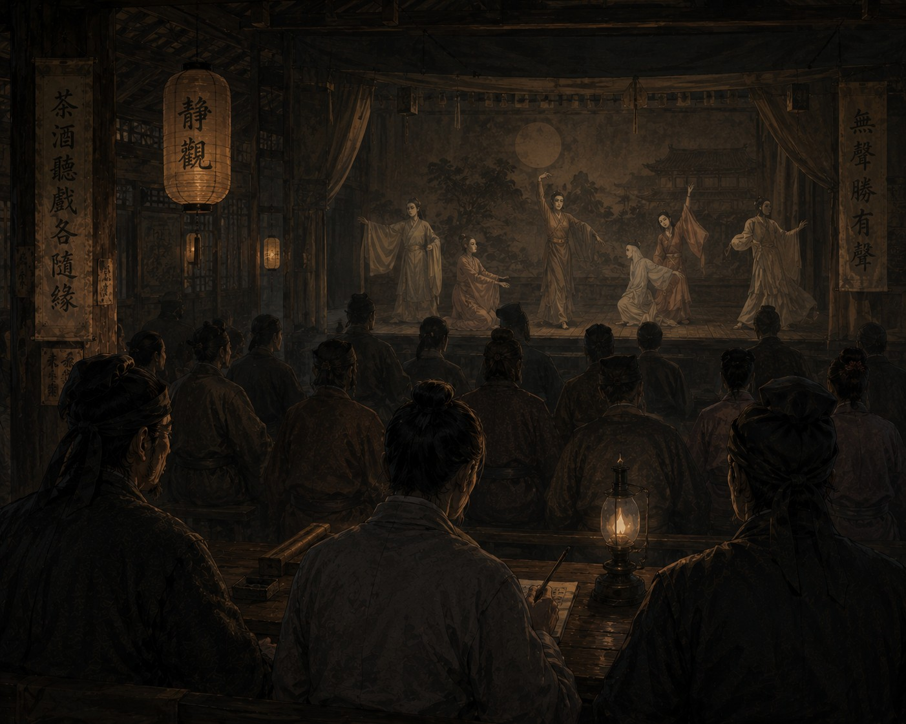

Дело о молчащем театре

К тому времени, когда мы прибыли в Цзинъань, я уже начал замечать перемены в самом воздухе Империи. Люди стали тише. На постоялых дворах теперь чаще шептались о снах и дурных знаках, чем о налогах или войнах. Даже чиновники начали подбирать слова осторожнее, словно боялись произнести нечто такое, что уже невозможно будет забыть.
Письмо из столицы пришло поздней осенью. Не приказ — просьба. И это тревожило сильнее.
Управление Безупречной Гармонии сообщало о бродячей театральной труппе, выступавшей в южных округах. После их представлений происходили странные вещи. Зрители начинали видеть одинаковые сны, некоторые переставали посещать храмы, другие внезапно бросали семьи и уходили странствовать. Несколько человек покончили с собой, оставив одинаковую фразу:
«Я почти вспомнил».
Труппу уже пытались арестовать местные власти, но каждый раз толпа мешала солдатам. Люди не защищали актеров и не спорили с чиновниками. Скорее, они боялись, что представления прекратятся.
Когда мы прибыли в город, выступления были уже запрещены. Однако слухи продолжали распространяться быстрее гонцов.
Со мной, как обычно, находились немой писец Цзянь и глухой страж Ло.
— Что именно они показывают? — спросил я у городского судьи.
Тот долго молчал, прежде чем ответить:
— Если бы я мог объяснить это словами, господин следователь, вас бы сюда не прислали.
Мы отправились в старый чайный театр возле речного рынка. Представление должно было состояться тайно, ночью. Внутри пахло мокрым деревом, дымом масляных ламп и дешевым вином. Люди сидели необычайно тихо. Не как зрители перед началом представления, а как паломники перед молитвой.
Когда погасили фонари, на сцену вышли актеры.
Все пятеро были немыми.
За ширмой медленно ударил барабан. Звук был глухим и редким, будто кто-то отсчитывал время между вдохами.
Сначала следовало исполнить цзянь — наблюдение.
Я слушал зал.
Актеры двигались медленно и удивительно плавно. Ткани меняли цвет в дрожащем свете ламп. Один изображал человека, пытающегося удержать воду в ладонях. Другой — женщину, не способную дотронуться до собственного лица. Третий закрывал глаза руками и начинал смеяться.
Постепенно в зале стало происходить нечто странное.
Люди начали дышать одинаково.
Это трудно объяснить тому, кто никогда не сидел в полной тишине среди множества людей. Но через некоторое время десятки незнакомцев начали вдыхать и выдыхать в одном ритме, словно представление медленно подчиняло их какому-то общему движению.
Я почувствовал это раньше остальных.
Ло рядом со мной внезапно напрягся.
А Цзянь перестал писать.
Тем временем актеры вынесли длинные полосы ткани и соединили их в одну ленту, протянувшуюся через весь зал. И тогда какая-то женщина в дальнем ряду заплакала.
Не от горя.
От узнавания.
Через несколько мгновений начали плакать и другие.
Кто-то тихо произнес:
— Я помню…
И сразу же замолчал.
Представление закончилось внезапно. Без поклона, без музыки, без финального жеста. Люди выходили наружу молча, будто после похорон близкого человека.
Тогда началось сы — осмысление.
На следующий день мы допросили актеров. За них говорил старый управляющий труппы — глухой мужчина с обожженными руками.
— Ваши представления вызывают беспорядки, — сказал я.
Старик спокойно покачал головой.
— Нет, господин следователь. Беспорядок уже существует. Мы лишь помогаем людям его почувствовать.
— Что именно вы показываете?
Он едва заметно улыбнулся.
— Слишком старую пьесу.
Ответ мне не понравился.
Цзянь тем временем осматривал реквизит. Через некоторое время он вложил мне в руку дощечку: «Символы дораздельного письма».
Я почувствовал холод.
Позже ночью мы обыскали повозки труппы. Среди костюмов и масок обнаружились старые свитки. Большая часть текста стерлась от времени, но несколько рисунков сохранились. На них люди держались за руки, касались лиц друг друга и изображались без разделения символов Трех Даров. На одном из свитков сохранилась короткая фраза: «Человек помнит целостность телом раньше, чем разумом».
И тогда я начал понимать, что именно происходило в чайном театре.
Труппа не призывала к мятежу и не проповедовала ересь. Они делали нечто гораздо более опасное. Они заставляли людей переживать общность без слов.
Империя держалась на разделении обязанностей, способов восприятия, способов общения и самих человеческих ощущений.
А здесь, в темном зале возле реки, люди внезапно начинали чувствовать себя частью чего-то единого.
Именно поэтому зрители говорили: «Я почти вспомнил».
Речь шла не о конкретном воспоминании.
Скорее о состоянии, которое человек никогда прежде не испытывал, но которое почему-то казалось ему древним и знакомым.
На третий день настало дуань — решение.
Из столицы прибыл чиновник Управления Безупречной Гармонии. Молодой человек с безупречно спокойным голосом и запахом дорогих благовоний на одежде. Он даже не стал смотреть представление.
— Труппу следует закрыть, — сказал он.
— За что именно? — спросил я.
Чиновник впервые повернулся в мою сторону.
— За создание недопустимой связи между гражданами Империи.
Даже теперь, спустя годы, я помню, насколько страшно прозвучала эта фраза.
Труппу арестовали той же ночью, и никто из актеров не сопротивлялся.
Когда их уводили, один из немых актеров неожиданно остановился возле меня. Я почувствовал запах старой бумаги и сырого шелка. Затем он осторожно коснулся моей ладони. Всего на одно мгновение.
Но в этот миг мне показалось, будто я одновременно слышу шум дождя, чужое дыхание, плач женщины, смех ребенка, звон бронзы и тысячи человеческих голосов.
Я резко отдернул руку.
Актер уже уходил.
Позже я много раз пытался убедить себя, что причиной была усталость, но той ночью я впервые не смог уснуть, потому что начал понимать вещь, о которой прежде боялся даже думать: возможно, люди страшатся целостности не потому, что она превращает человека в чудовище, а потому, что она делает его слишком близким к другим людям.